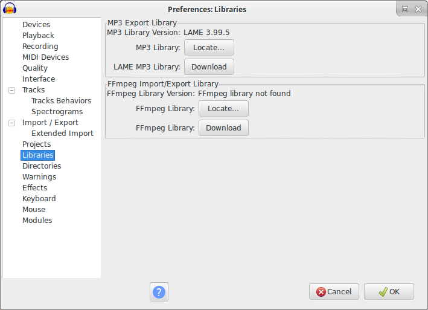

Installing and updating Audacity on Linux
- In addition to basic Audacity you may wish to install the optional LAME MP3 encoding software
- Also the optional FFmpeg library which allows Audacity to import and export a much larger range of audio formats including M4A (AAC), AC3, AMR (narrow band) and WMA and also to import audio from most video files.
| Note carefully that simply re-installing Audacity will not clear and reset your Audacity settings for preferences and plug-ins. For instructions on how to achieve this please see Reset Audacity Settings. |
Installation instructions
The recommended way to install software for most GNU/Linux and Unix-like Desktop distributions, is to install from the official distribution repository using a package manager. Most distributions provide Audacity packages.
Alternatively you can build the latest Audacity tagged release from our source code.
Note that this Manual only relates to the current release of Audacity.
System Requirements
We recommend using the latest version of GNU/Linux from your distribution that is compatible with your hardware specifications. Audacity will run best with at least 1GB RAM and a 2 GHz processor. Because it was originally written when computers were less powerful, you may be able to run it on much less powerful hardware too. Simple recording is possible on a 700 MHz Raspberry Pi, using a USB Microphone. However, Pi operating systems are not officially supported and Audacity may be less stable on them than on desktop operating systems.
Projects saved by old versions of Audacity
Current Audacity is compatible with project files saved by versions of Audacity 1.3.x and later, including 2.x.x.
| Chromebooks: Audacity does not run on Chrome OS. Although not officially supported, it is possible in principle to run Audacity on a Chromebook under a Chrome version of Linux Ubuntu. |
Check for Updates
You can check to see if you have the latest version of Audacity by using .
This takes you to the Download page of the Audacity website where you can check what the latest release version of Audacity is.
You can then compare the latest release with the version you have now as shown by using .
Installing LAME
You may download (or compile) then install a compatible version of the LAME MP3 encoder then locate it in Libraries Preferences.
Most Linux distributions have some sort of package manager that fetches software packages from the Internet and installs them for you. Open that package manager, search for LAME, and install it if it is not already installed.
| If there is not a LAME package for your distribution, go to the LAME Project home page and download the latest source code. Compile it as a shared object. When Audacity prompts you for it, it will be at /usr/local/lib/libmp3lame.so.
This is for advanced users. Inexperienced users are advised to look for a LAME package for their distribution. |
Removal of Libraries Preferences
Some distributions (for example, current Ubuntu) package Audacity with MP3 encoding and FFmpeg (or Libav) already linked dynamically to the relevant system libraries. In these packaged Audacity builds there is no need to locate LAME or FFmpeg, so Audacity will have no "Libraries" Preferences.
Users compiling Audacity from source code can similarly remove the "Libraries" Preferences by configuring Audacity with --disable-dynamic-loading. Then build Audacity linked to the system LAME (and also to system or locally-compiled FFmpeg or libav if required).
Installing LAME on Ubuntu 11.10 and later
In Ubuntu 11.10 and later the default package manager is the "Ubuntu Software Center". It is often most convenient to install the "Ubuntu Restricted Extras" as this includes LAME, FFmpeg and other useful media encoding/decoding tools.
If you wish to install only the LAME package required for MP3 export, search for LAME in the Ubuntu Software Center and install it.
Installing LAME on other Debian-based systems
The following are detailed instructions for installing LAME using the Synaptic package manager on recent Debian-based systems and in Ubuntu 11.04 and earlier.
- Open Synaptic:
- In GNOME (the default desktop environment for many Debian-based systems), access Synaptic by clicking
- In KDE there will be a similar menu accessible from the bottom-left of the screen
- Enter the root password when asked for it.
- In the Synaptic window, choose "Settings", then "Repositories"
- In the "distribution Software" tab, check the box for "non free" (on Ubuntu based systems this is called "multiverse"), then hit the Close button.
- Back in the main Synaptic Window, type "lame" in the "Quick search" box.
- The search results will show the packages "lame" and "libmp3lame0" at the top of the list - mark both for installation by double-clicking.
- Click "Apply", and on "OK" for any warnings; the LAME software will automatically download and install.
- Right-click over the entry for "libmp3lame0" > Properties
- On the "Installed Files" tab, note the location of "libmp3lame.so.0", probably at /usr/lib/libmp3lame.so.0
- Close all the Synaptic windows.
Locating LAME
- Open Audacity, click then "Libraries" in the list on the left.
- In MP3 Export Library, check if a LAME version number displays to right of MP3 Library Version. If so, LAME has already been detected and you should now be able to export MP3 and skip the remainder of these instructions. If the MP3 Library is stated as "not found":
- Click the button to right of MP3 Library
- In the "Locate Lame" dialog that appears, click "Browse"
- In the "Where is libmp3lame.so.0?" dialog, navigate to the location you noted in step 9 in the installation instructions, select libmp3lame.so.0, click , then and to exit Preferences.
Installing the FFmpeg Import/Export Library
- Because of software patents, Audacity cannot include the FFmpeg software or distribute it from its own websites. Instead, use the following instructions to download and install the free and recommended FFmpeg third-party library.
- Advanced usage: If you already have Audacity-compatible FFmpeg 2.2.x or 2.3.x shared libraries in the system PATH, Audacity will use those as long as you do not install FFmpeg from the links below and as long as you do not specify the FFmpeg you want Audacity to use in Libraries Preferences.
Obtaining FFmpeg
You may download (or compile) and install a compatible version of the FFmpeg or libav library for your purposes then locate it in Libraries Preferences.
If you download a pre-built library, this might be either a "shared" or "static" build. A static build consists of a single libavformat library, whereas a shared build has at least three libraries (libavformat, libavcodec and libavutil). It is recommended to use a shared build, but Audacity will also work with a static build.
To build FFmpeg, obtain the source code from the FFmpeg project. To build libav, obtain the source code from the libav project. Configure the build with --enable -shared so that it builds the necessary shared object library (.so) files. If required, you can also configure to enable or disable particular encoding/decoding libraries. When you build Audacity from our source code, it should link to the installed FFmpeg headers.
FFmpeg version support
|
- Compiling Audacity against supported FFmpeg/libav: Dynamic loading (as in default Audacity ./configure) enables Libraries Preferences for manual loading of LAME and FFmpeg/libav but requires building against the FFmpeg project.
- No-longer-supported FFmpeg/libav: Audacity 2.0.6 and later may still build against unsupported FFmpeg/libav (such as FFmpeg 0.8 which is system-installed on Debian Wheezy), but configuring with --disable-dynamic-loading will usually be necessary. This will cause mono WMA files to export with no audio data.
- See the "Compiling" section in the 2.0.6 or later Release Notes for more guidance.
Removal of Libraries Preferences
Some Linux distributions or versions thereof may package Audacity with MP3 encoding and FFmpeg support already linked dynamically to the relevant system libraries. In these packaged builds there is no need to locate LAME or FFmpeg, so Audacity will have no "Libraries" Preferences.
Users compiling Audacity from source code can similarly remove the "Libraries" Preferences by configuring Audacity with --disable-dynamic-loading. Then build Audacity linked to system LAME and to a system (or locally compiled) version of FFmpeg 1.2 to 3.x.x (libav 0.8 to 12), according to the version of Audacity as described above.
Locating the FFmpeg library manually
| Ubuntu / Debian based packages are often built with dynamic loading disabled. When dynamic loading is disabled, LAME and FFmpeg will be loaded automatically if compatible versions are installed and there will not be a "Libraries" page in Preferences. |
If you installed FFmpeg while Audacity was running, or if you installed FFmpeg to a non-default location, Audacity will ask you to configure Preferences to locate the FFmpeg library. To do this, click then "Libraries" in the list on the left:
- 
As in the image above, the FFmpeg Library Version will say "not found". To correct this:
- Click the button to right of FFmpeg Library:.
- If a "Success" message indicates Audacity has now automatically detected valid FFmpeg libraries and asks if you want to detect them manually, click , then to close Preferences.
- If the "Locate FFmpeg" dialog appears, click .
- Navigate to the folder that contains FFmpeg and select the file libavformat.so.55 or other appropriate libavformat version.
- Click then and again to close Preferences.
FFmpeg Library Version should now show a set of three version numbers for the sub-libraries of FFmpeg ("F" for libavformat version, "C" for libavcodec version and "U" for libavutil version). If you still see "not found", you may have installed the wrong libraries. Click the button to obtain the correct library for your operating system. You can also choose to see diagnostic information about FFmpeg detection.
Reset Audacity Settings on Linux
As stated in the introduction on this page, simply re-installing Audacity will not clear and reset your Audacity settings for preferences and plug-ins.
The data for these are stored in a folder called audacity-data in ...
- Open the "home" folder (opens "/home/user-name" in the default file browser)
- Use Ctrl + H to show hidden folders (works in most common file browsers, or "View menu > Show hidden files")
- There it is: "./audacity-data"
First you will need to quit Audacity.
To completely reset your Audacity settings
Navigate to that audacity-data folder and delete the entire contents. Then restart Audacity.
To reset just your Audacity preferences
Navigate to that audacity-data folder and delete the audacity.cfg file. Then restart Audacity.
To reset just your plug-ins
Navigate to that audacity-data folder and delete the:
- pluginregistry.cfg file
- pluginsettings.cfg file
- Plug-Ins folder
Then restart Audacity